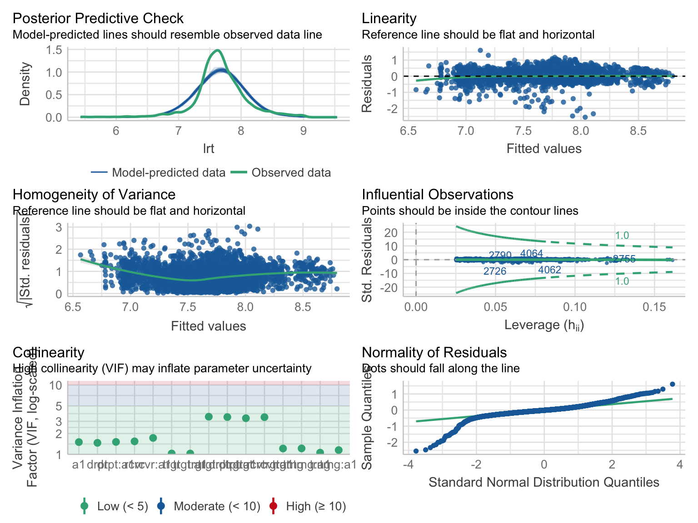

Code
dat <-
read_feather("./data/Hofmann_Maulwurf_rt.arrow") |>
mutate(a1 = age - 6.210813,
lrt = log(rt)) |>
relocate(a1, .before=Block)The file was prepared on the basis of the dataframe used for the original LMM analysis. (see https://osf.io/3u62p/ )
The data are part of the Master thesis that recorded children’s (age: 4-8 years) reaction times during a task teaching them syntactic relations.
Subj: Participant ID (renamed from ID; random factor)Item: Word ID (random factor)age: 4 - 8 yearsBlock (within-Subj/within-Item):
Target(renamend fom targetness)
rt: response timedat <-
read_feather("./data/Hofmann_Maulwurf_rt.arrow") |>
mutate(a1 = age - 6.210813,
lrt = log(rt)) |>
relocate(a1, .before=Block)age is centered at mean; using a round number of years (i.e., 6), rather than the mean yields a more meaningul GM. We keep it for compatibility with original fit.rtIndicator variables for Target and Block contrasts + trgt : Target syllable - Non-target syllable + trng : 2md learning - 1st learning + drpt : Disruption - 2nd learning + rcvr : Recovery - Disruption
contrasts(dat$Target) <- contr.sum(2)
contrasts(dat$Block) <- MASS::contr.sdif(4)
mm <- model.matrix(~ 1 + Target*Block, data=dat)
dat$trgt <- mm[,2]
dat$trng <- mm[,3]
dat$drpt <- mm[,4]
dat$rcvr <- mm[,5]lmax.logRT <-
lmer(logRT ~ Block * Targetness * c_age + (1 + Block * Targetness | anon_ID) + (1 + c_age| Item),
control = lmerControl(calc.derivs = FALSE, optCtrl=list(maxfun=100000), optimizer="bobyqa"), data = SRT.analysis)load("./fits/lmax.logRT.RData")
VarCorr(lmax.logRT)Loading required package: lmerTest
Attaching package: 'lmerTest'The following object is masked from 'package:lme4':
lmerThe following object is masked from 'package:stats':
step Groups Name Std.Dev. Corr
Item (Intercept) 0.023720
c_age 0.025239 -0.915
anon_ID (Intercept) 0.280653
BlocktrainingEffect 0.187670 0.345
BlockdisruptionEffect 0.144358 0.054 0.343
BlockrecoveryEffect 0.141720 -0.414 -0.236
TargetnesstargetEffect 0.038688 -0.553 -0.155
BlocktrainingEffect:TargetnesstargetEffect 0.096957 0.261 -0.127
BlockdisruptionEffect:TargetnesstargetEffect 0.259033 -0.394 -0.085
BlockrecoveryEffect:TargetnesstargetEffect 0.186209 0.626 0.166
Residual 0.275480
-0.480
-0.201 0.191
0.099 -0.137 -0.748
0.122 -0.022 0.449 -0.782
0.065 -0.285 -0.268 0.529 -0.856
system.time(
m_cpx <- lmer(lrt ~ 1 + trgt * (trng+drpt+rcvr) * a1 +
(1 + trgt * (trng+drpt+rcvr) | Subj) + (1 + a1 | Item),
data=dat, REML=FALSE, control = lmerControl(calc.derivs = FALSE))
) user system elapsed
119.382 1.399 121.092 VarCorr(m_cpx) Groups Name Std.Dev. Corr
Item (Intercept) 0.023786
a1 0.025226 -0.911
Subj (Intercept) 0.275216
trgt 0.018503 0.566
trng 0.183351 0.345 0.165
drpt 0.140687 0.055 0.199 0.347
rcvr 0.138108 -0.419 -0.191 -0.235 -0.478
trgt:trng 0.046769 -0.268 -0.740 0.127 -0.094 0.136
trgt:drpt 0.125087 0.399 0.442 0.085 -0.130 0.024 -0.784
trgt:rcvr 0.089932 -0.633 -0.269 -0.167 -0.058 0.288 0.534 -0.855
Residual 0.275401 user system elapsed
54.186 8.368 56.758 system.time(
m_prm2 <- lmer(lrt ~ 1 + trgt * (trng+drpt+rcvr) * a1 +
(1 + drpt + rcvr + trng + drpt:trgt + rcvr:trgt | Subj) +
(0 + trgt || Subj) + (1 + a1 | Item),
data=dat, REML=FALSE, control = lmerControl(calc.derivs = FALSE))
) user system elapsed
47.935 0.684 48.707 VarCorr(m_prm2) Groups Name Std.Dev. Corr
Item (Intercept) 0.023766
a1 0.025957 -0.890
Subj trgt 0.016289
Subj.1 (Intercept) 0.275328
drpt 0.139135 0.037
rcvr 0.137283 -0.412 -0.469
trng 0.187435 0.327 0.336 -0.219
drpt:trgt 0.099702 0.360 -0.261 0.097 0.068
rcvr:trgt 0.081473 -0.590 0.006 0.272 -0.124 -0.868
Residual 0.276055 user system elapsed
20.009 2.432 20.612 compare_models(m_cpx, m_prm2, effects="fixed", style="se_p")Parameter | m_cpx | m_prm2
----------------------------------------------------------------
(Intercept) | 7.66*** (0.04) | 7.66*** (0.04)
trgt | 0.01* (4.49e-03) | 0.01** (4.34e-03)
trng | -0.08** (0.03) | -0.08** (0.03)
drpt | 0.05* (0.02) | 0.05* (0.02)
rcvr | -0.04 (0.02) | -0.04 (0.02)
a1 | -0.09** (0.03) | -0.09** (0.03)
trgt * trng | 5.09e-03 (0.01) | 2.26e-03 (9.46e-03)
trgt * drpt | 0.01 (0.02) | 0.02 (0.02)
trgt * rcvr | 4.94e-03 (0.02) | 3.20e-03 (0.02)
trgt * a1 | 8.21e-03* (4.02e-03) | 8.74e-03* (3.89e-03)
trng * a1 | 0.04 (0.02) | 0.04 (0.02)
drpt * a1 | 0.03 (0.02) | 0.03 (0.02)
rcvr * a1 | -0.02 (0.02) | -0.02 (0.02)
(trgt * trng) * a1 | 2.52e-03 (0.01) | 2.35e-03 (8.41e-03)
(trgt * drpt) * a1 | -0.02 (0.02) | -0.02 (0.02)
(trgt * rcvr) * a1 | -3.74e-03 (0.01) | -4.35e-03 (0.01)
----------------------------------------------------------------
Observations | 6335 | 6335check_model(m_prm2)Could not compute standard errors from random effects for diagnostic
plot.
sessionInfo()R version 4.2.1 (2022-06-23)
Platform: x86_64-apple-darwin17.0 (64-bit)
Running under: macOS Big Sur ... 10.16
Matrix products: default
BLAS: /Library/Frameworks/R.framework/Versions/4.2/Resources/lib/libRblas.0.dylib
LAPACK: /Library/Frameworks/R.framework/Versions/4.2/Resources/lib/libRlapack.dylib
locale:
[1] en_US.UTF-8/en_US.UTF-8/en_US.UTF-8/C/en_US.UTF-8/en_US.UTF-8
attached base packages:
[1] stats graphics grDevices utils datasets methods base
other attached packages:
[1] lmerTest_3.1-3 report_0.5.5.1 see_0.7.2.1
[4] correlation_0.8.2.2 modelbased_0.8.5 effectsize_0.7.0.5
[7] parameters_0.18.2 performance_0.9.2 bayestestR_0.12.1
[10] datawizard_0.5.1 insight_0.18.2 easystats_0.5.1
[13] forcats_0.5.1 stringr_1.4.0 dplyr_1.0.9
[16] purrr_0.3.4 readr_2.1.2 tidyr_1.2.0
[19] tibble_3.1.8 ggplot2_3.3.6 tidyverse_1.3.2
[22] lme4_1.1-30 Matrix_1.4-1 arrow_9.0.0
loaded via a namespace (and not attached):
[1] nlme_3.1-157 fs_1.5.2 lubridate_1.8.0
[4] bit64_4.0.5 httr_1.4.4 numDeriv_2016.8-1.1
[7] tools_4.2.1 backports_1.4.1 utf8_1.2.2
[10] R6_2.5.1 mgcv_1.8-40 DBI_1.1.3
[13] colorspace_2.0-3 withr_2.5.0 tidyselect_1.1.2
[16] emmeans_1.8.0 bit_4.0.4 compiler_4.2.1
[19] cli_3.3.0 rvest_1.0.2 xml2_1.3.3
[22] labeling_0.4.2 scales_1.2.0 mvtnorm_1.1-3
[25] digest_0.6.29 minqa_1.2.4 rmarkdown_2.15
[28] pkgconfig_2.0.3 htmltools_0.5.3 dbplyr_2.2.1
[31] fastmap_1.1.0 htmlwidgets_1.5.4 rlang_1.0.4
[34] readxl_1.4.1 rstudioapi_0.13 farver_2.1.1
[37] generics_0.1.3 jsonlite_1.8.0 googlesheets4_1.0.1
[40] magrittr_2.0.3 patchwork_1.1.2 Rcpp_1.0.9
[43] munsell_0.5.0 fansi_1.0.3 lifecycle_1.0.1
[46] stringi_1.7.8 yaml_2.3.5 MASS_7.3-57
[49] grid_4.2.1 ggrepel_0.9.1 crayon_1.5.1
[52] lattice_0.20-45 haven_2.5.0 splines_4.2.1
[55] hms_1.1.2 knitr_1.39 pillar_1.8.1
[58] boot_1.3-28 estimability_1.4.1 reprex_2.0.2
[61] glue_1.6.2 evaluate_0.16 modelr_0.1.8
[64] vctrs_0.4.1 nloptr_2.0.3 tzdb_0.3.0
[67] cellranger_1.1.0 gtable_0.3.0 assertthat_0.2.1
[70] xfun_0.32 xtable_1.8-4 broom_1.0.0
[73] coda_0.19-4 googledrive_2.0.0 gargle_1.2.0
[76] ellipsis_0.3.2